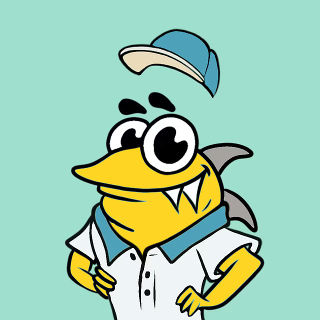
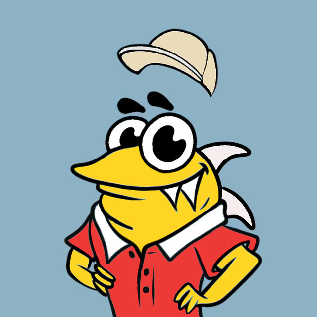
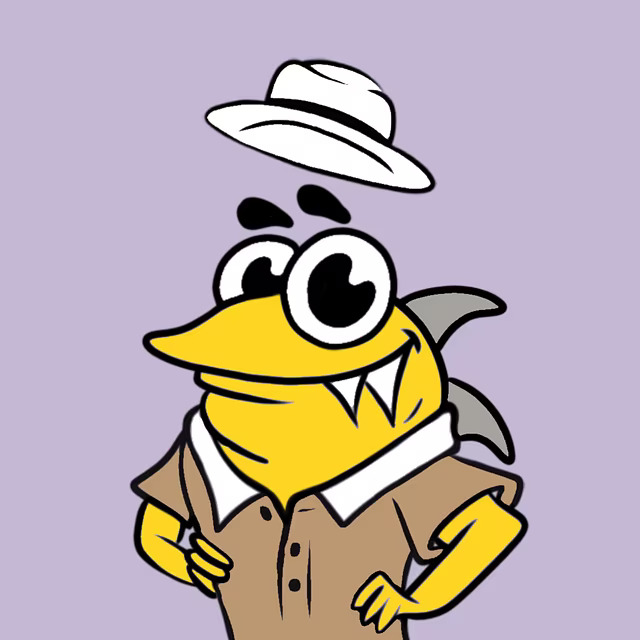
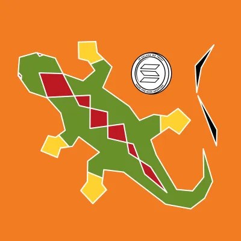
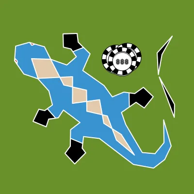
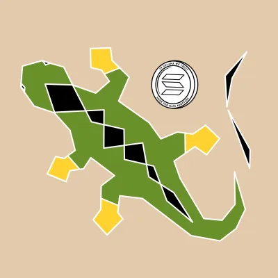
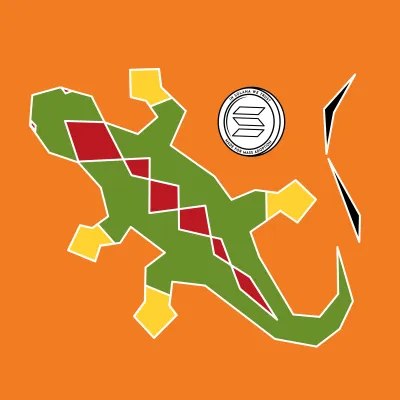
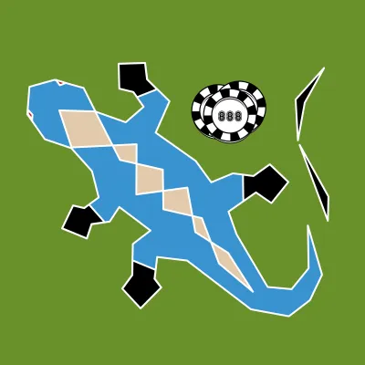
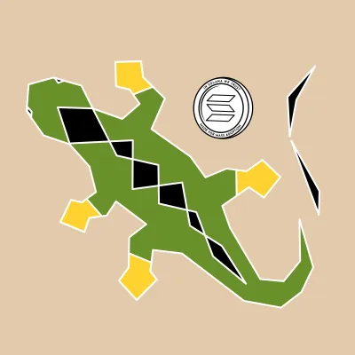

Torrino is an iconic collection of 500 NFTs generated on the Solana blockchain: Torrino NFTs are inspired to a stylized gecko, considered as a universal good luck charm, combined with five talismans attracting fortune, according to different human cultures. The entire NFTs collection is backed by Torrino DAO with a community-driven approach. Torrino DAO represents a thriving community of Solana evangelists and crypto traders who strongly believe in the rise of Web3 space and are united by a passion for disruptive innovation.
Any Torrino NFT holder is a DAO voting member, DAO's mission is to create value for the entire collection in a long-term perspective and protect the value of Torrino NFT Collection from typical pump and dump scheme. DAO Treasury is essential for fuelling the success and longevity of the entire NFT collection, in fact, DAO Treasury can use funds collected by minting to purchase other digital collectibles from emerging Solana NFT collections as well as acquire any type of crypto assets inside the Solana ecosystem according to DAO Manifesto. Treasury Address is public on Solana blockchain, therefore anyone can check it.
Book ValueHover for detailsTap for details
We have had enough of monkeys, teddy bears and pixelated silhouettes when we think about a collection of NFTs: for this reason we have created a completely original concept design, really unlike from the most famous collections in the world. Even if the collection boasts an exclusive originality compared to others on the market, it's in terms of utility that it stands out the most. Infact Torrino DAO manages DAO Treasury with the aim of creating and maintaining a suitable endowment of collectible resources to support the entire collection. The Book Value of each Torrino NFT represents abstractally the equivalent value in USDC that each NFT would have if the DAO were dissolved, all DAO Treasury assets sold and the obtained monies divided among all NFT holders in relation to the number of NFTs held in their wallet.
Collections
Gen1 & Gen2
Gen 1 - Torrino DAO
Gen 2 - Solnauta



Manifesto
How DAO is ruled?
A Decentralized Autonomous Organization (DAO) called Torrino DAO is set up among all the owners of a Torrino NFT Collection.
Torrino DAO is a digitally native organization operating on a community-based ownership model deployed with Solana smart contracts.
Each Torrino NFT owner is a Torrino DAO member.
DAO Manifesto regulates how DAO works and operate.
Purpose of the DAO is to preserve and protect the value and consistency of its treasury in a long term prospective.
Seventy percent of funds, collected from NFT minting process, will represent the initial endowment of DAO treasury.
Only DAO members have the power over the destination of DAO treasury.
Torrino DAO exists exclusively on Solana blockchain, therefore if Solana blockchain ceases to exist then Torrino DAO will also cease to exist too.
Torrino DAO is led by a Governance Council (GC) which has the function of supervising and guaranteeing compliance with Manifesto among all DAO members.
Governance Council presents the improvement proposals (IP) to DAO for their approval in order to allow the achievement of the provisions of article 5.
To be approved any IP must obtain at least an approval quorum of 51% of all rights to vote.
One right to vote is obtained for each NFT held.
Only natural persons or representatives of legal entities with proven competence and experience in the field of collectibles can be appointed as members of GC.
GC must be composed of a minimum of two to a maximum of seven members.
Each member of GC has only one per capita right to vote.
GC resolutions must be approved with at least 2/3 of the total per capita rights to vote.
GC members must be categorically DAO members.
Upon creation of the collection, first two members of GC are nominated directly by development team of Torrino NFT Collection.
Each IP must have at least an unrestricted voting time of two days.
Each member of GC can propose the expulsion of another member of the GC for indecorous or hostile behavior; the decision of GC about the expulsion of one of its members, if approved by the other members of GC, must be approved by DAO with at least an approval quorum of 51% of all rights to vote.
GC may propose the appointment of a new member of GC to DAO with at least 2/3 of the consent of the members of GC. DAO members must approve the appointment with an approval quorum of 51% of all rights to vote.
GC appoints the Guardian within its circle, who has the function of supervising compliance with the rules established by DAO Manifesto and, if necessary, is free to propose to DAO additional IPs necessary for the achievement of article 5.
Guardian ceases to function upon voluntary resignation, in the event of sudden death or if all remaining members of the GC request his replacement via IP and DAO confirms with at least an approval quorum of 51% of all right to vote.
All IPs are based on Solana blockchain, however the call to vote can also be mentioned on social platforms like Twitter or Discord.
GC must receive a symbolic annual refund for its duties which is decided through an online consultation between all DAO members.
GC can appoint a Collectibles Specialist Panel (CSP) consisting of a minimum of three and a maximum of ten DAO members.
CSP has to provide guidance, analysis and suggestions to GC in order to help him achieving with the provisions of article 5.
GC decides independently if and how CSP can be reimbursed for its assistance role.
Composition of CSP is variable and depends on the needs of GC: only DAO members with proven knowledge of crypto markets can be appointed as members of CSP.
In the event of force majeure or by the unanimous will of GC, DAO can be dissolved forever by releasing all its members from compliance with DAO Manifesto after dividing its entire treasury into pro-quota parts in favour of all Torrino NFT holders.
Any DAO Manifesto provisions can be modified or integrated by DAO with at least an approval quorum of 51% of all rights to vote.
Only GC has the authority to propose changes or integrations to DAO Manifesto with at least an approval quorum of 2/3 of all rights to vote.
English is the only authorized language for IP drafting.
Frequently asked questions
Frequently asked questions
Which Are The Risks You Run If You Buy A Torrino NFT?
Solana NFTs are in a constant state of change, with holders' expectations shifting frequently. There is no guarantee whatsoever that Torrino NFT collection will be successful or that its price will remain stable even with the support of DAO Treasury. NFTs are volatile and uncertain, their prices can be also hit by heavy impact in others blockchain failures or by hostility of new laws passed by international regulators. You should buy a Torrino NFT exclusively for the pleasure of owning a unique digital artwork and to be a Torrino DAO member, while those who buy it for speculative purposes are in fact making an insane risky bet.
Does It Make Sense To Buy A Torrino NFT?
The collection was conceived to fully satisfy the three structural features of every successful NFT collection: originality, rarity and utility, however it is precisely utility that makes the collection attractive and different from many others, thanks to the presence of DAO Treasury that has the ambitious goal of protecting the value of the entire collection over time.
Which Is the utility of a Torrino NFT?
Whoever owns a Torrino NFT becomes a Torrino DAO member, DAO Treasury represents the supporting pillar of the entire NFT collection.
How is DAO Ruled?
The functioning of DAO is specified inside DAO Manifesto, only holders of a Torrino NFT can take part during voting session.
How Many Votes Are Assigned During A Voting Session?
Each NFT held corresponds to one voting right, therefore, whoever owns five NFTs then holds five voting rights and so on.
Who Has The Power To Move Treasury Funds?
This power is reserved exclusively to DAO, which expresses itself with the vote on the destination of the resources proposed by GC with the support of CSP. The transfer of treasury funds is regulated by a smart contract which is activated only in the event of an approved vote.
What Quorum An Improvement Proposal [IP] Must Have To Be Approved By DAO?
At least 51% of the voting rights is required, if this is not achieved the proposal is rejected and no transfer of funds can be performed.
How Can I Know the balance Of DAO Treasury?
Treasury Address is public on Solana blockchain, therefore anyone can check it, furthermore the calls to vote and all the operations concerning the treasury are available on our Discord server.
Can I Apply To Be Appointed As GC Member Or CSP Member?
DAO members can apply to be appointed as GC member or CSP member in compliance with the provisions of DAO Manifesto, however considering that there could also be intrusion attempts [raids] by tricksters and bandits, the applications are examined by GC with veto power and subsequently proposes for last approval to DAO.
How To Apply For Governance Council?
Applications must be published in the relevant section of Torrino DAO Discord Server and must allow the personal identification of the proponent thanks to Twitter Blue Verified Badge or else Linkedin profile.
 




